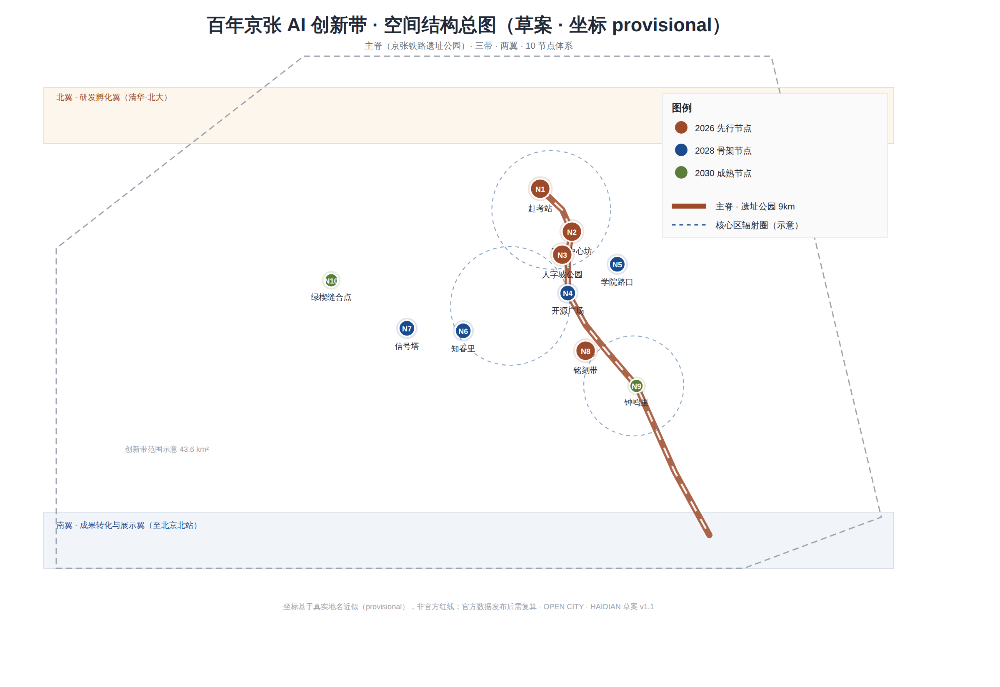
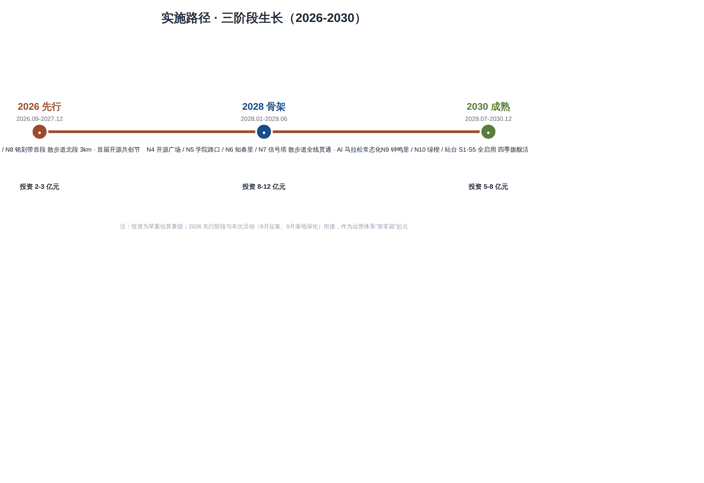
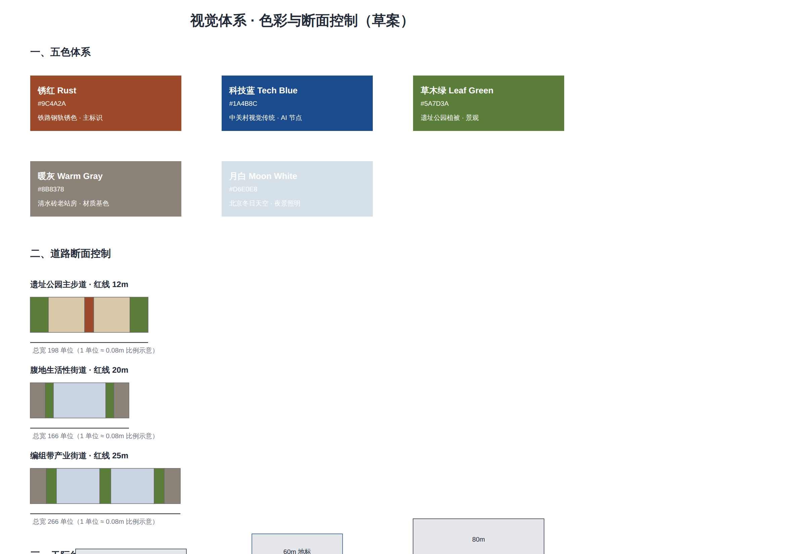

OPEN CITY · HAIDIAN 开源征集方案 · 草案 v1.1（provisional，非官方红线）｜概念：道岔 · 信号 · 开源

| 层级 | 范围 | 方案重点 |
|---|---|---|
| 统筹研究范围 | 43.6 km² | AI 产业生态与未来城市形态 |
| 总体设计范围 | 11.4 km² | 更新总体框架、产业空间、交通市政、风貌控制 |
| 重点区域范围 | 368.4 公顷（三处） | 众智园 / 北京AI原点社区 / 大钟寺 详细设计 |
| 重点区 | 定位 | 空间动作 |
|---|---|---|
| 北京AI原点社区（清华园-五道口） | 近校型成果转化与人才社区 | N1 赶考站 · N2 宇宙中心坊 · 校区园区慢行缝合 |
| 众智园AI自主创新加速区（知春路-学院路门户） | 花园型全栈自主创新街区 | N3 人字坡公园 · N5 学院路口 · 清河界面 |
| 大钟寺AI产业集聚区 | 城市型智能经济与国际交往街区 | N9 钟鸣里 · 大钟寺站一体化 · 四象限步行连通 |
| 图层 | 说明 | 证据 |
|---|---|---|
| 用地分区 | 正线带（15/20/65）· 腹地带（40/25/35）· 编组带（20/55/25） | geometry/land_use.geojson |
| 建筑 | 更新建筑基底（保留/改造/新建分级建议） | geometry/buildings.geojson |
| 蓝绿公共空间 | 主脊 9km 步道 + 10 公共节点（含 AI 站台 S1-S5） | geometry/green_space.geojson · public_space.geojson |
| 交通慢行 | 轨道站点一体化 · 慢行断点缝合 · 无障碍坡道 ≤5% | geometry/roads.geojson |
| 更新项目 | JZ-01 至 JZ-06（慢行缝合/清河界面/转化街/四象限/算力节点/活动路线） | geometry/phasing.geojson |
| 指标 | 值 | 来源 |
|---|---|---|
| 设计范围面积 | 11,412,825 m² | geometry/site_boundary.geojson |
| 绿地率 | 12.3% | geometry/green_space.geojson |
| 公共空间比例 | 7.3% | geometry/public_space.geojson |
| 建筑基底面积 | 310,807 m² | geometry/buildings.geojson |
| 设计节点 | 10 个（节点+腹地占 8-12%） | public_space.geojson PUBLIC-002~011 |
| 三阶段投资 | 2-3 亿 / 8-12 亿 / 5-8 亿元 | proposal.md 实施章节 |
| 项目 | 说明 |
|---|---|
| 任务覆盖 | 公告 1.3/1.4/1.5 与 agent.1-agent.6 必选任务 → compliance_matrix.json 逐条映射 |
| 自检状态 | BOUNDARY_TRUST / KEY_AREAS_TRUST / LAND_USE_TOPOLOGY 等先行通过；finalize 后全量自检（见 self_check.json） |
| 来源 | sources.json 登记公开与清权来源；proposal.md 附 13 条史实来源 |
| 假设 | assumptions.json：控规/道路红线/权属待官方确认；几何为 provisional，官方 SITE_BOUNDARY 发布后复算 |

